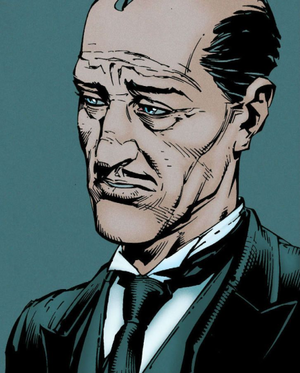
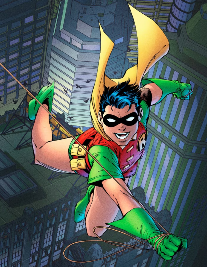
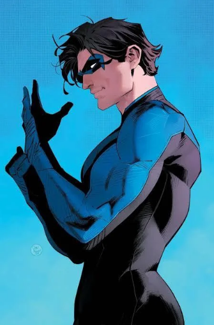
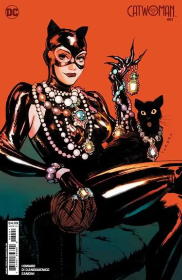
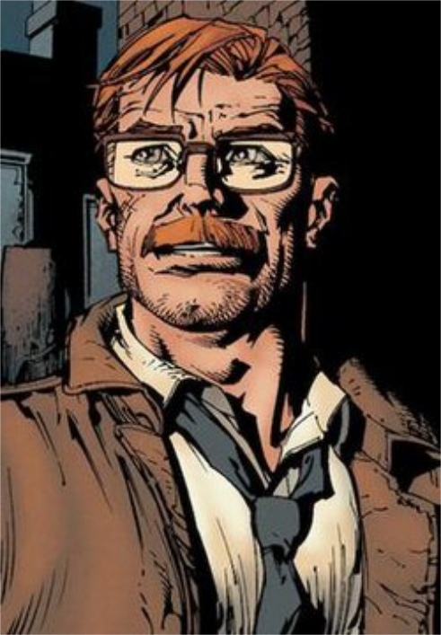
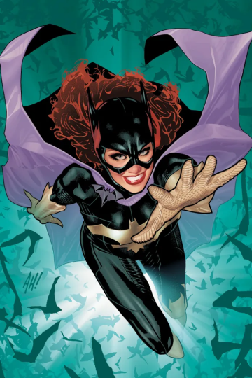
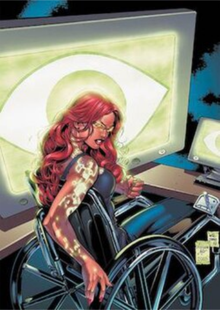
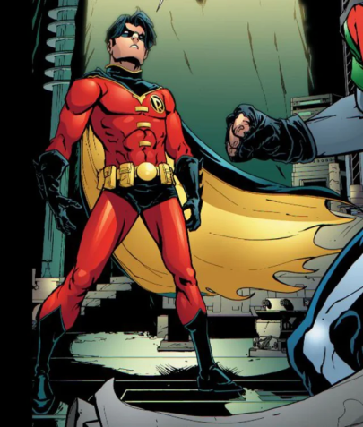
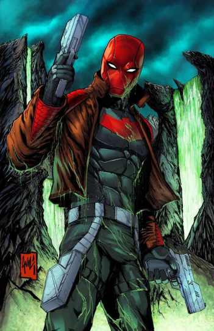
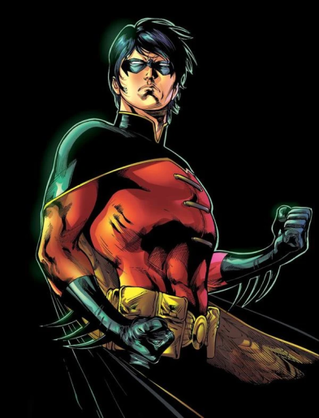

The Family Timeline
-

Alfred Pennyworth
Butler and Father-figure.After Bruce Wayne's parents were murdered, Alfred raised him as his own. Acting as a father figure, he remains Batman’s most trusted companion. His wisdom and loyalty make him invaluable both in and out of combat.
-
 
Dick Grayson AKA Robin/Nightwing
Adopted son and Sidekick.After his parents’ murder, Bruce adopted Dick Grayson and trained him as the first Robin. Eventually, he stepped out of Batman’s shadow to become Nightwing. Now he protects Gotham’s neighboring city, Blüdhaven, as his own hero.
-

Catwoman AKA Selena Kyle
Love interest and anti-hero.A cleptomaniac and master thief, Selena is one of Batman's closest allies. While her and Batman's morals can misalign at times, her loyalty always falls with him.
-

James Gordon
Batman's Law and Order.As Gotham’s Police Chief, James Gordon and Batman often clashed. After facing the Joker, they realized they worked best as allies. Gordon now stands as Batman’s moral compass and closest friend.
-
Barbara Gordon AKA Batgirl/Oracle
Ally and Technical Specialist.Inspired by her father and Batman, Barbara became Batgirl. After being paralyzed by the Joker, she reinvented herself as Oracle. As a master hacker, she became an essential ally to the Bat-Family.
  -
 
Jason Todd AKA Robin/Red Hood
Sidekick turned anti-hero.Jason Todd became Batman’s second Robin but was reckless and defiant. His life ended tragically at the Joker’s hands. Revived years later, he returned as the Red Hood, an anti-hero torn between justice and vengeance.
-
Tim Drake AKA Robin/Red Robin
Protege and Master Detective.Tim Drake discovered Batman’s identity on his own, proving his intellect. After Jason’s death, he convinced Batman that he needed a Robin. Later, Tim took on the Red Robin mantle to fight crime independently.

-

Damian Wayne AKA Robin
Son and sidekick.Born to Bruce Wayne and Talia al Ghul, Damian was raised by assassins. Trained from birth, he struggled with arrogance and violence. Over time, he embraced Batman’s code and became his loyal partner as Robin.